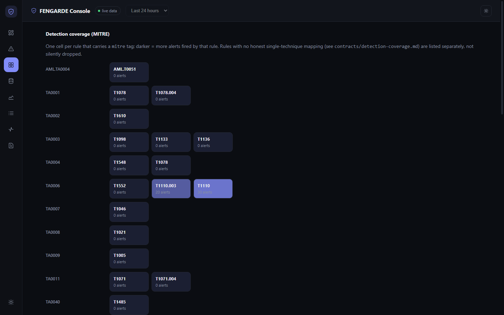
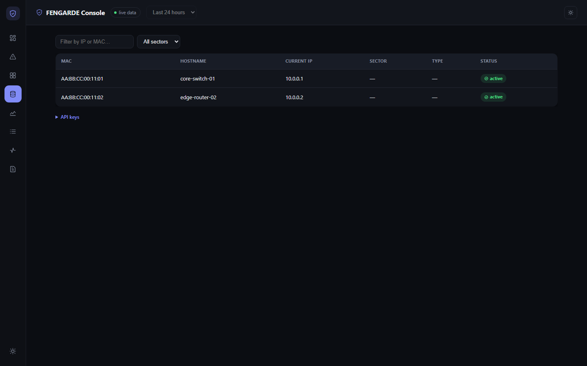
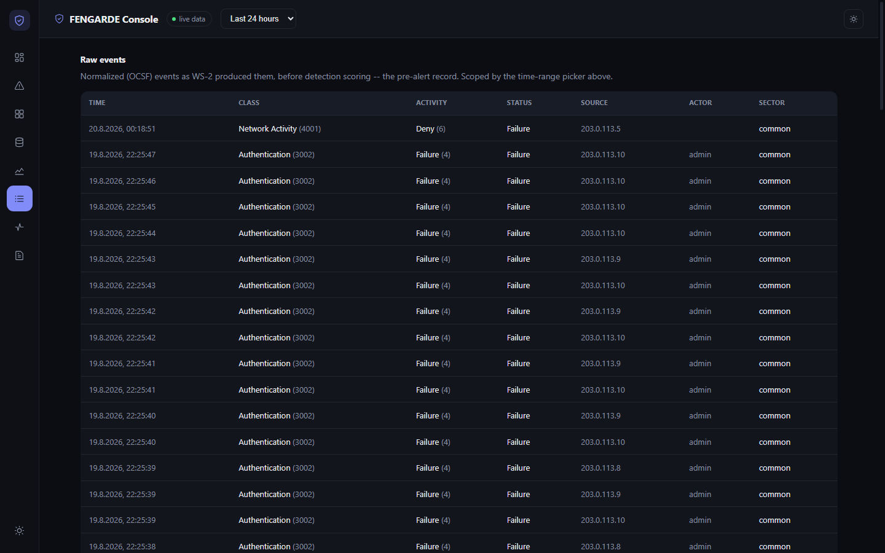
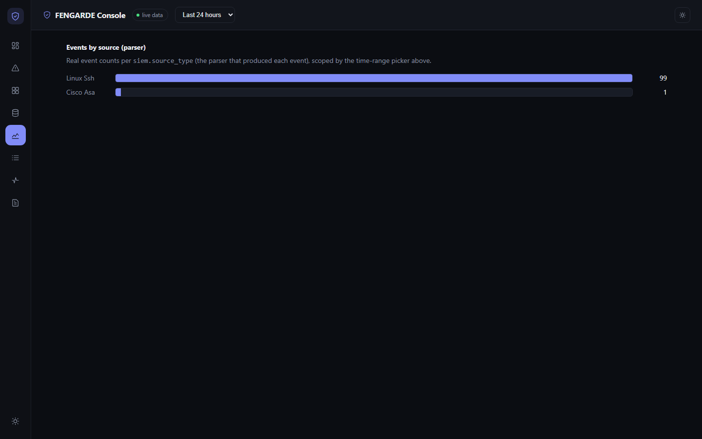
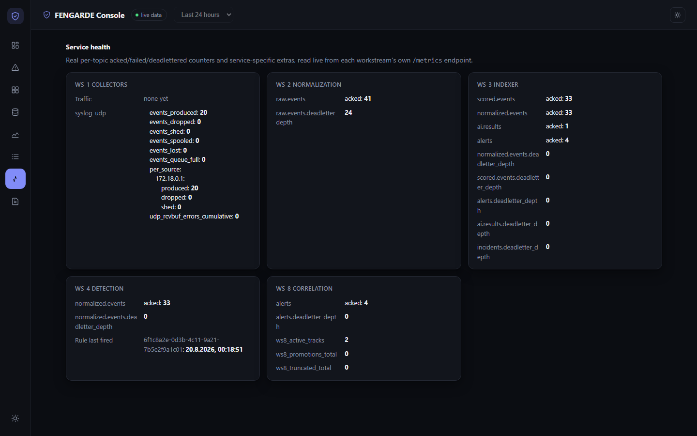
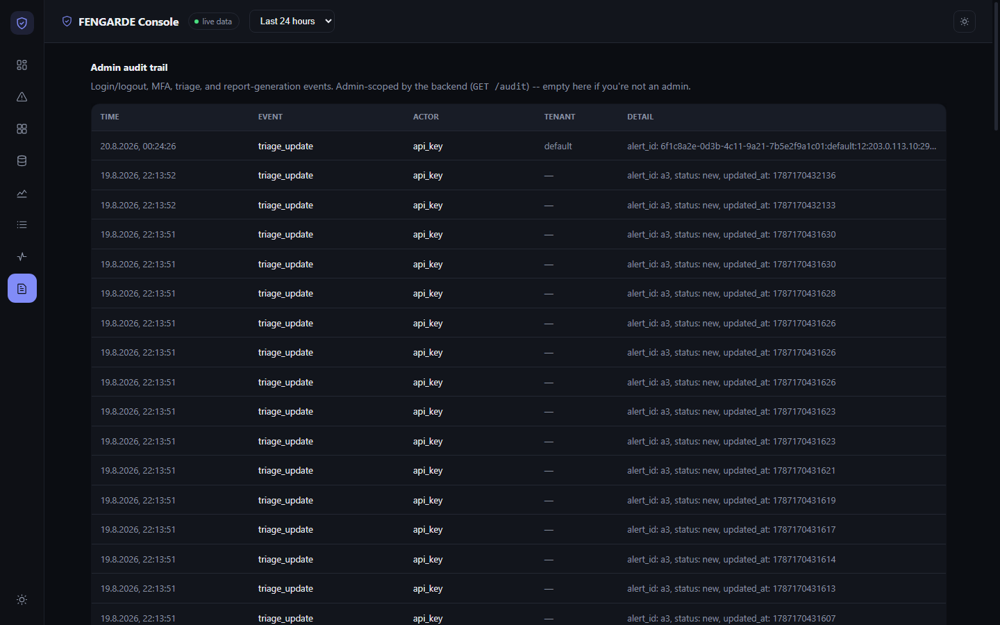
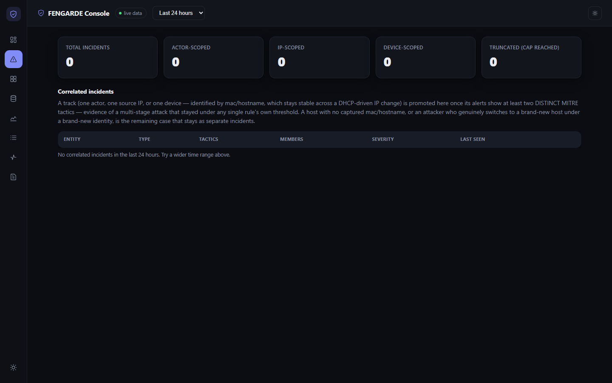

What an analyst actually sees
Eight views, one running stack. Every number in every screenshot below came back from a real HTTP request made seconds before capture.
Live triage, MITRE-tagged, AI-assisted
Real alerts with real severity, a MITRE ATT&CK chip pulled straight off the firing rule, and an inline "Why" panel joining the AI verdict back onto its alert without ever overwriting it.

MITRE ATT&CK, measured not asserted
One cell per rule that actually carries a technique tag, shaded by real fired-alert counts. The rule table below it shows exactly which rules are enabled, stateful, and how they're weighted — per tenant.

Asset history that survives DHCP
Every device is keyed by MAC, not IP — so a lease renewal doesn't fork one host into two records. Full IP-over-time history, per tenant, one click away.

Every event, not just the ones that fired
The full pre-detection OCSF stream — what WS-2 actually normalized, before any rule ever saw it. Class and activity codes are decoded against the project's own restricted 8-class profile, not guessed.

Which parser actually did the work
A real per-parser event count, derived from whatever's already indexed — no separate breakdown endpoint exists, so this reads the same data the Events tab does and counts it honestly.

Health, including the parts that aren't healthy
Per-topic acked/failed/dead-lettered counts read live off every workstream's own metrics endpoint. Nothing is hidden — including a real 24-message backlog sitting in one service's dead-letter queue.

Every admin action, appended forever
Login, logout, MFA enrollment, triage changes, report generation — an append-only trail the backend gates to admins by session role, not by hiding a button in the UI.

Multi-stage attacks, correlated across alerts
A single actor, IP, or device that crosses two distinct MITRE tactics gets promoted from N separate alerts into one incident — evidence of an attack that stayed under any single rule's own threshold. Empty here on purpose: no attacker in this run ever crossed that bar.
